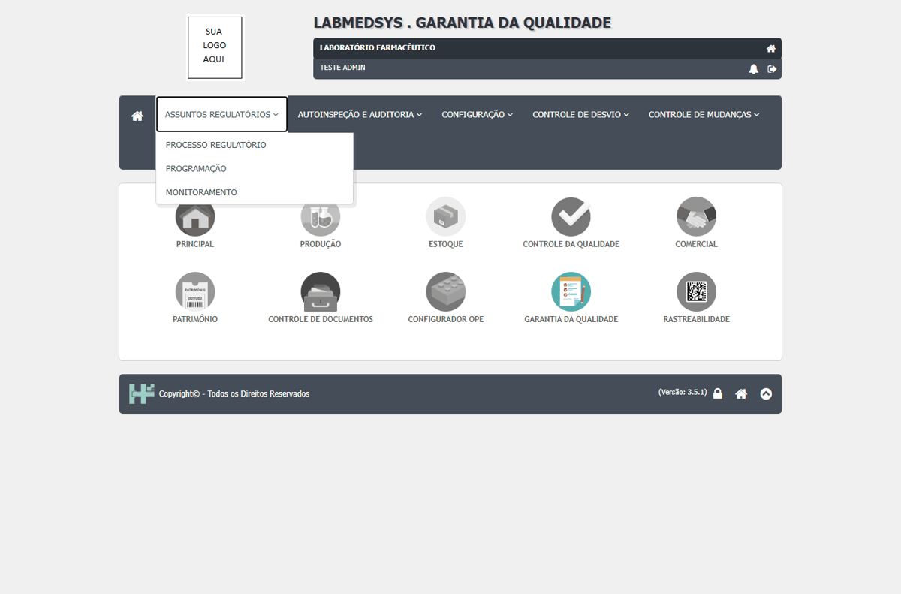
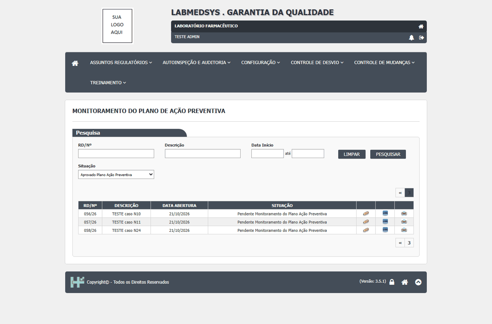
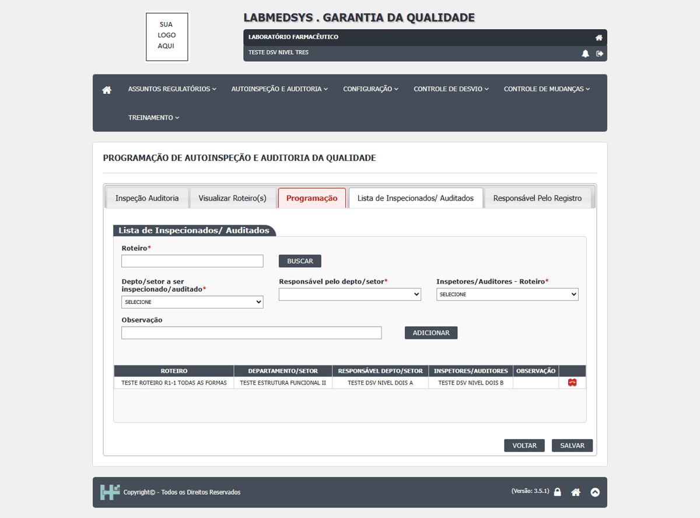
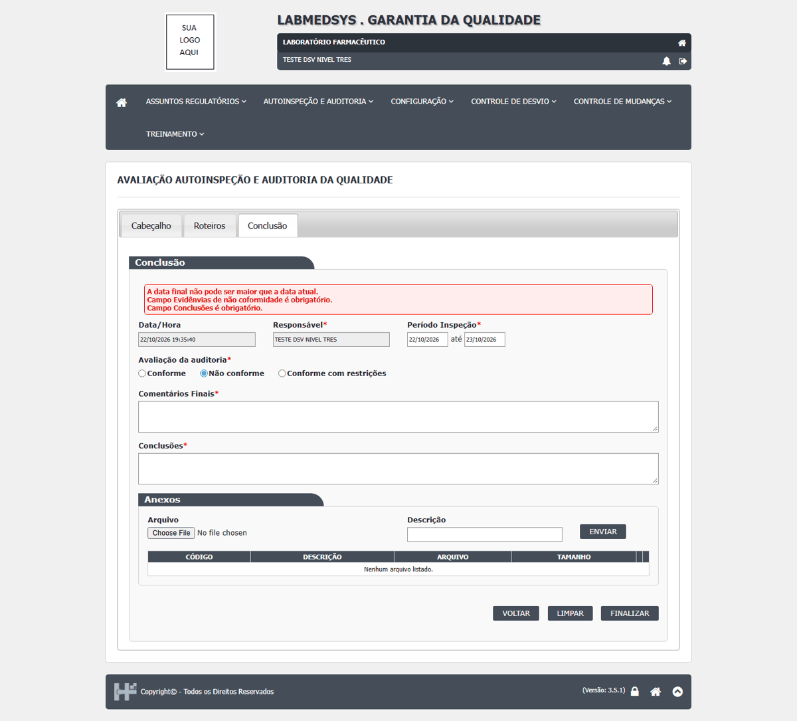

| Defeito | Gravidade | Situação | Título | Tela citada no defeito |
|---|---|---|---|---|
| DV-GQ-036 | Alta | Aberto | O histórico do desvio não guarda o conteúdo das avaliações, da ação imediata, do plano e dos resultados | Histórico dos desvios (várias telas) |
| DV-GQ-100 | Alta | Aberto | O relatório Planejamento de Autoinspeção e Auditorias ignora período e situação e não lista as programações | Autoinspeção e Auditoria › Planejamento |
| DV-GQ-326 | Alta | Aberto | O papel CONSULTA (nível 1) **incluiu** um tipo de treinamento e vê Editar e Excluir em quase todas as telas | Treinamento Técnico › Telas de treinamento |
| DV-GQ-015 | Média | Aberto | As quatro telas do registro de produto existem, mas não têm entrada no menu | Assuntos Regulatórios › menu |
| DV-GQ-027 | Média | Aberto | Filtros de data das listas: intervalo de um dia e só Data Fim devolvem zero; data inválida é ignorada | Listas de várias telas do Controle de Desvios |
| DV-GQ-028 | Média | Aberto | O filtro de situação das listas está incompleto ou não filtra | Listas de várias telas do Controle de Desvios |
| DV-GQ-032 | Baixa | Aberto | Clicar no título das colunas das listas não reordena | Listas de várias telas do Controle de Desvios |
| DV-GQ-103 | Baixa | Aberto | Erros de texto e de rótulo em mensagens e no PDF | Autoinspeção e Auditoria › várias telas |
| DV-GQ-281 | Baixa | Aberto | "Sessão Expirada | Geral › Entrada na GQ (página inicial) |
| DV-GQ-327 | Baixa | Aberto | Textos e telas: | Treinamento Técnico › Várias |
| DV-GQ-328 | Baixa | Aberto | "Ocorreu um erro inesperado." intermitente em gravações que repetidas funcionam (tipo inativo); | Treinamento Técnico › Várias |
Cada defeito, com o passo a passo e as capturas
DV-GQ-036 · O histórico do desvio não guarda o conteúdo das avaliações, da ação imediata, do plano e dos resultados
O histórico do desvio não guarda o conteúdo das avaliações, da ação imediata, do plano e dos resultados. O que a tela mostra: Só registra situação, responsável e alguns campos; omite o conteúdo das avaliações, áreas envolvidas, ação imediata, diagrama, ações do plano e resultados. O cancelamento pela tela 1 continua ausente (DV-GQ-001).
Como reproduzir o erro, passo a passo
- Abrir o histórico depois de avaliações, ação imediata, diagrama, plano e resultados.
Esperado
Histórico com o conteúdo antigo e novo.
Obtido
Só registra situação, responsável e alguns campos; omite o conteúdo das avaliações, áreas envolvidas, ação imediata, diagrama, ações do plano e resultados. O cancelamento pela tela 1 continua ausente (DV-GQ-001).
Evidência (captura da tela)

DV-GQ-100 · O relatório Planejamento de Autoinspeção e Auditorias ignora período e situação e não lista as programações
O relatório ignora período e situação e não lista as programações; PDF de 4 páginas, 3 em branco.
Como reproduzir o erro, passo a passo
- Imprimir com filtros.
Esperado
Listar as programações do período.
Obtido
O relatório ignora período e situação e não lista as programações; PDF de 4 páginas, 3 em branco.
Sem captura de tela registrada para este defeito.
DV-GQ-326 · O papel CONSULTA (nível 1) **incluiu** um tipo de treinamento e vê Editar e Excluir em quase todas as telas
O papel CONSULTA (nível 1) **incluiu** um tipo de treinamento e vê Editar e Excluir em quase todas as telas. A conferir: as funções do perfil dele no Principal
Como reproduzir o erro, passo a passo
- O papel CONSULTA (nível 1) incluiu um tipo de treinamento e vê Editar e Excluir em quase todas as telas.
- A conferir: as funções do perfil dele no Principal
Esperado
O comportamento correto conforme a norma e o fluxo da tela, descrito no resumo.
Obtido
O papel CONSULTA (nível 1) incluiu um tipo de treinamento e vê Editar e Excluir em quase todas as telas. A conferir: as funções do perfil dele no Principal
Sem captura de tela registrada para este defeito.
DV-GQ-015 · As quatro telas do registro de produto existem, mas não têm entrada no menu
As telas do caminho "registro de produto" (Check-list, Solicitação de Registro, Controle de Produtos Enviados para Registro Anvisa e Exigências da ANVISA) não aparecem em nenhum menu da Garantia da Qualidade para o administrador de teste. Revisão pelo código (16/10): as quatro telas existem, com modelos e tabelas, mas o script que cadastra o menu e as funções no banco só tem três entradas para Assuntos Regulatórios (Processo Regulatório, Programação e Monitoramento); sem entrada de menu a tela não chega ao usuário. Hipótese a validar com quem conhece o histórico do projeto: as telas nunca foram oferecidas ao usuário na versão entregue. Em 22/10/2026 o menu continua com só 3 telas. Bloqueia os casos CT-GQ-097 e CT-GQ-099.
Como reproduzir o erro, passo a passo
- Abrir os seis menus da GQ (Assuntos Regulatórios, Autoinspeção e Auditoria, Configuração, Controle de Desvio, Controle de Mudanças, Treinamento) e procurar as quatro telas do registro de produto.
Esperado
As quatro telas aparecerem no menu Assuntos Regulatórios.
Obtido
Nenhuma das quatro telas aparece; o menu de Assuntos Regulatórios só tem Processo Regulatório, Programação e Monitoramento.
Evidência (captura da tela)

DV-GQ-027 · Filtros de data das listas: intervalo de um dia e só Data Fim devolvem zero; data inválida é ignorada
Filtros de data das listas: intervalo de um dia e só Data Fim devolvem zero; data inválida é ignorada. O que a tela mostra: Nas telas 7 a 12 o intervalo de um dia devolve 0; só a Data Fim devolve 0 nas telas 9 a 12; a data inválida é ignorada em silêncio.
Como reproduzir o erro, passo a passo
- Datas: intervalo de um dia.
- Só Data Fim.
- Data inválida.
Esperado
Datas coerentes, mensagem para data inválida.
Obtido
Nas telas 7 a 12 o intervalo de um dia devolve 0; só a Data Fim devolve 0 nas telas 9 a 12; a data inválida é ignorada em silêncio.
Sem captura de tela registrada para este defeito.
DV-GQ-028 · O filtro de situação das listas está incompleto ou não filtra
O filtro de situação das listas está incompleto ou não filtra. O que a tela mostra: Tela 7 devolve 0 para "Pendente Plano Ação Corretiva"; telas 9, 10 e 12 não filtram "Aprovado"; tela 4 mistura Finalizado e Pendente; tela 1 não oferece todas as situações; "Reprovado" devolve 0.
Como reproduzir o erro, passo a passo
- Filtro de situação.
Esperado
Filtrar pela situação escolhida.
Obtido
Tela 7 devolve 0 para "Pendente Plano Ação Corretiva"; telas 9, 10 e 12 não filtram "Aprovado"; tela 4 mistura Finalizado e Pendente; tela 1 não oferece todas as situações; "Reprovado" devolve 0.
Evidência (captura da tela)

DV-GQ-032 · Clicar no título das colunas das listas não reordena
Clicar no título das colunas das listas não reordena. O que a tela mostra: Nada acontece (os títulos são links sem ação).
Como reproduzir o erro, passo a passo
- Clicar no título de uma coluna.
Esperado
Reordena.
Obtido
Nada acontece (os títulos são links sem ação).
Evidência (captura da tela)
DV-GQ-103 · Erros de texto e de rótulo em mensagens e no PDF
Erros de texto e rótulo: "Evidênvias… coformidade", "perído", "Confirma a iniciar programação?"; o grid mostra "RESPONSÁVEL" para o item da norma logo após incluir o desvio; data do PDF em formato americano.
Como reproduzir o erro, passo a passo
- Ver mensagens.
Esperado
Texto correto.
Obtido
Erros de texto e rótulo: "Evidênvias… coformidade", "perído", "Confirma a iniciar programação?"; o grid mostra "RESPONSÁVEL" para o item da norma logo após incluir o desvio; data do PDF em formato americano.
Evidência (captura da tela)


DV-GQ-281 · "Sessão Expirada
"Sessão Expirada. Não autorizado. O usuário não tem permissão para esta página." (a sessão não expirou); nenhuma tela da GQ mostra a barra de menu para esses usuários.
Como reproduzir o erro, passo a passo
- Entrar na GQ com um usuário sem a função da página inicial (os quatro usuários de teste novos, inclusive o de nível 3).
Esperado
Mensagem que diz que falta permissão, sem chamar de sessão expirada; menu das telas permitidas.
Obtido
"Sessão Expirada. Não autorizado. O usuário não tem permissão para esta página." (a sessão não expirou); nenhuma tela da GQ mostra a barra de menu para esses usuários.
Evidência (captura da tela)

DV-GQ-327 · Textos e telas:
Textos e telas: "minímo" (grafia), "Loca", título "Conclusão do Treinamento" na caixa de cima da Matriz, "Inclusão efetuada com sucesso." ao iniciar a turma, edição da Solicitação sem carregar os funcionários até digitar o setor de novo
Como reproduzir o erro, passo a passo
- Textos e telas: "minímo" (grafia), "Loca", título "Conclusão do Treinamento" na caixa de cima da Matriz, "Inclusão efetuada com sucesso." ao iniciar a turma, edição da Solicitação sem carregar os funcionários até digitar o setor de novo
Esperado
O comportamento correto conforme a norma e o fluxo da tela, descrito no resumo.
Obtido
Textos e telas: "minímo" (grafia), "Loca", título "Conclusão do Treinamento" na caixa de cima da Matriz, "Inclusão efetuada com sucesso." ao iniciar a turma, edição da Solicitação sem carregar os funcionários até digitar o setor de novo
Sem captura de tela registrada para este defeito.
DV-GQ-328 · "Ocorreu um erro inesperado." intermitente em gravações que repetidas funcionam (tipo inativo);
"Ocorreu um erro inesperado." intermitente em gravações que repetidas funcionam (tipo inativo); HTTP 500 intermitente nas consultas que chamam o Principal (lista da Conclusão, página 5; Acompanhamento)
Como reproduzir o erro, passo a passo
- "Ocorreu um erro inesperado." intermitente em gravações que repetidas funcionam (tipo inativo);
- HTTP 500 intermitente nas consultas que chamam o Principal (lista da Conclusão, página 5;
- Acompanhamento)
Esperado
O comportamento correto conforme a norma e o fluxo da tela, descrito no resumo.
Obtido
"Ocorreu um erro inesperado." intermitente em gravações que repetidas funcionam (tipo inativo); HTTP 500 intermitente nas consultas que chamam o Principal (lista da Conclusão, página 5; Acompanhamento)
Sem captura de tela registrada para este defeito.